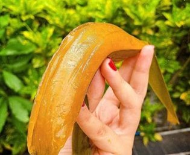
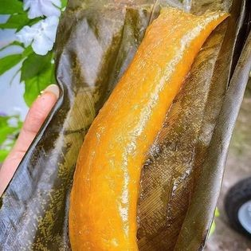
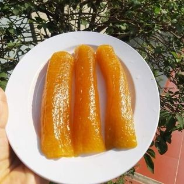
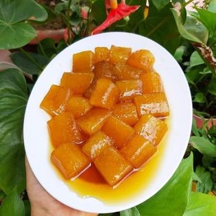

Bánh gio
Theo dân gian, khi ăn bánh tro và một ít hoa quả trong bữa ăn sáng của ngày Tết Đoan Ngọ thì sẽ diệt được sâu bọ, giun sán trong người. Người Việt Nam còn gọi Tết Đoan Ngọ là "Tết giết sâu bọ" là ngày phát động bắt sâu bọ, tiêu diệt các loài gây hại cho cây trồng. Bánh tro, ngay cái tên gọi đã khiến người nghe liên tưởng đến một món ăn đậm chất Cao Bằng. Thực vậy, cũng như những món bánh khác, bánh tro là một món ăn dân dã, mộc mạc, dễ làm và rất ngon.
Nguyên liệu để làm bánh gồm: gạo nếp, nước tro, nước vôi trong, lá cây chít hoặc lá dong, lá chuối. Gạo để làm bánh phải là loại gạo nếp cái hoa vàng, vo gạo rồi để ráo nước. Nước tro hòa với nước vôi trong có màu vàng hổ phách mới đạt yêu cầu, sau đó cho gạo vào ngâm đến khi nước ngấm vào gạo. Khi vớt gạo lên để gói bánh cần phải rửa qua nước, cho thêm một chút muối và để ráo. Lá dùng để gói bánh tro được luộc qua, tước hết phần gân lá cho mềm, dai và dễ gói hơn. Lá phải được lau khô trước khi gói bánh.
Người dân Cao Bằng thường gói bánh dài giống như chiếc chuôi liềm, hoặc hình khối tam giác. Khi buộc bánh cũng không được chật quá để khi luộc hạt gạo có thể nở và chín đều. Nước luộc bánh cũng cho một ít nước tro, đổ nước ngập hơn bánh ít nhất khoảng 10 - 20 cm. Bánh được luộc từ 3 - 5 giờ và vớt ra để nguội. Bánh tro có thể để được lâu ngày.
Một chiếc bánh tro đạt yêu cầu phải tạo được cảm giác ngon ngay từ khi mới bóc ra, cắt từng miếng nhỏ, chấm với đường mật mía. Khi đưa miếng bánh tro vào miệng bao giờ cũng cảm nhận cái hương vị mát đầu tiên của bánh rồi đến vị ngọt của mật mía quyện cùng vị dẻo của gạo nếp. Đó là vị riêng có của bánh tro Cao Bằng.